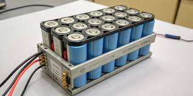
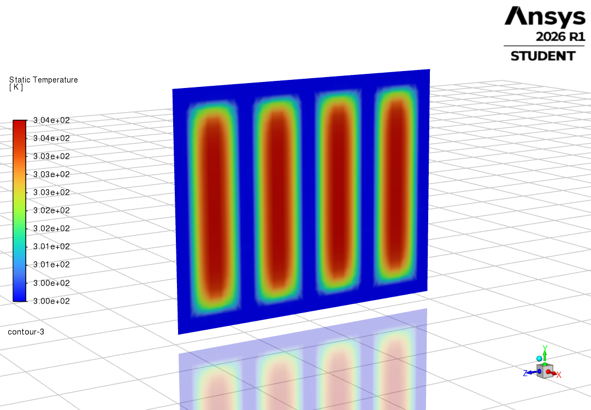
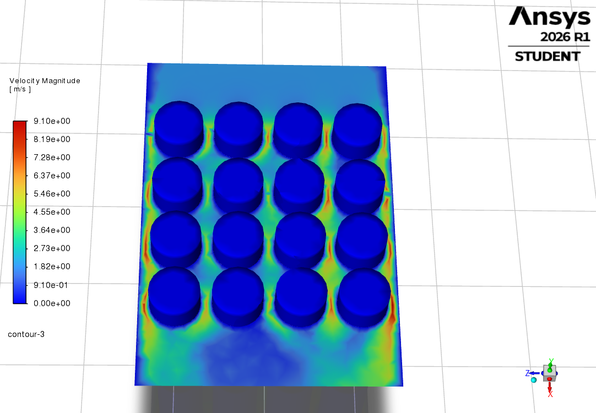

Electric vehicle batteries generate significant heat during charging and discharging cycles. Maintaining battery temperature within an optimal range is essential for improving safety, performance and battery lifespan. This project focuses on developing an intelligent Battery Thermal Management System (BTMS) using Computational Fluid Dynamics (CFD) and Machine Learning techniques for predictive cooling strategies.
The project integrates CFD simulations and Machine Learning techniques. Temperature profiles obtained from numerical simulations are used to train predictive models that estimate cooling requirements for different battery operating conditions. The proposed framework aims to minimize thermal hotspots while maintaining efficient coolant utilization.
CFD simulations were performed to evaluate the thermal and flow characteristics of the battery module. The temperature and coolant velocity distributions were analyzed to assess the cooling performance of the system.


Current Status : Ongoing Research Project at IIT Guwahati.